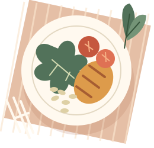

mabi.
QUARTA-FEIRA, 23 SET
Boa tarde, Ana.
SET23
À mesa, sem pressa
Comer bem.
Do seu jeito.
Uma próxima refeição possível, com o que você já tem.

Seu dia, até aqui
Pequenos registros, mais contexto.
2 de 5ÁguaAlimentaçãoSonoMovimentoIntestino